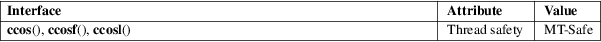

ccos, ccosf, ccosl − complex cosine function
Math library (libm, −lm)
#include <complex.h>
double
complex ccos(double complex z);
float complex ccosf(float complex z);
long double complex ccosl(long double complex
z);
These functions calculate the complex cosine of z.
The complex cosine function is defined as:
ccos(z) = (exp(i * z) + exp(−i * z)) / 2
For an explanation of the terms used in this section, see attributes(7).

C11, POSIX.1-2008.
glibc 2.1. C99, POSIX.1-2001.
cabs(3), cacos(3), csin(3), ctan(3), complex(7)